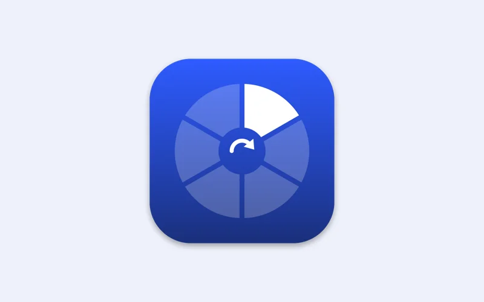

Swivel
An offline file converter that lives in the macOS menu bar. Start dragging a file, tap Shift, and a format wheel opens at your cursor; let go on a slice and a converted copy appears next to the original. Handles images, audio, video and PDFs, with a second wheel for AirDrop, sharing, compressing and resizing. Built in Swift, with ffmpeg.